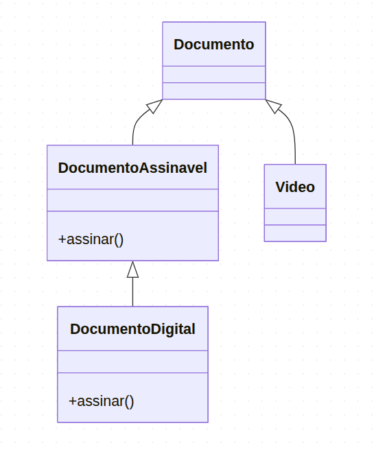

Foca
Foca Princípios SOLID - Entenda o "L" do SOLID (criado em 28/08/2025)
O SOLID é um conjunto de princípios de design de software para ajudar desenvolvedores a criarem sistemas mais flexíveis e fáceis de manter.
Hoje vamos estudar o terceiro princípio:
L — Liskov Substitution Principle (Princípio da Substituição de Liskov)
Este princípio afirma que:
"Objetos em um programa devem ser substituíveis por instâncias de seus subtipos, sem alterar a funcionalidade do programa."
(pt.wikipedia.org, en.wikipedia.org)
Ou seja:
- Qualquer instância de uma classe derivada (filha) deve poder substituir uma instância da classe base (pai) sem que o comportamento esperado seja alterado.
- Subtipos devem garantir que as funcionalidades se comportem de forma consistente com os tipos base, mantendo contrato e previsibilidade.
Isso garante coerência, previsibilidade e segurança no uso de herança e polimorfismo.
🚫 Exemplo errado (violando LSP)
Suponha que temos um sistema que trata documentos que podem ser assinados:
class Documento {
assinar() {
console.log("Documento assinado.");
}
}
class DocumentoDigital extends Documento {
assinar() {
console.log("Documento digital assinado.");
}
}
class Video extends Documento {
// Erroneamente extendemos Documento, mas vídeo não pode ser assinado.
}
Se Video estende Documento, mas não possui o método assinar() corretamente ou lança um erro, estamos violando o princípio de Liskov.
Isso porque um Video não pode substituir um Documento sem quebrar o comportamento esperado do cliente que tenta invocar assinar().
Por que isso acontece?
Geralmente, violações ocorrem por abstrações mal feitas — colocar responsabilidades em hierarquias de classes sem refletir o comportamento real.
No exemplo acima, expandimos a hierarquia de herança pela semelhança conceitual (um vídeo é um tipo de "documento"), mas isso não reflete as capacidades reais dos objetos.
✅ Exemplo correto (respeitando LSP)
Em vez de usar herança incorreta, podemos separar comportamentos:
class Documento { /* sem método assinar */ }
class DocumentoAssinavel extends Documento {
assinar() {
console.log("Documento assinado.");
}
}
class DocumentoDigital extends DocumentoAssinavel {
assinar() {
console.log("Documento digital assinado.");
}
}
class Video extends Documento {
// Aqui, Video não implementa assinar — sem problema.
}
Agora, qualquer cliente que espere chamar assinar() só deve receber objetos do tipo DocumentoAssinavel, garantindo que o comportamento seja preservado.
Por que obedecer ao LSP é importante?
- Previsibilidade: permite que subclasses se comportem de forma consistente com a classe base.
- Polimorfismo seguro: possibilita usar subclasses onde forem esperadas classes base, sem surpresas no comportamento.
- Manutenção facilitada: evita bugs silenciosos ao evoluir a hierarquia de classes.
Conclusão
O “L” em SOLID — o Princípio da Substituição de Liskov — garante que subtipos possam substituir seus tipos base sem alterar o funcionamento do programa.
Sua violação geralmente indica problemas de abstração ou hierarquia mal modelada.
Aplicar o LSP corretamente torna o código mais robusto, legível e aderente ao paradigma de programação orientada a objetos.
Para aprender ainda mais sobre SOLID, explore os outros artigos aqui o blob sobre os outros princípios e veja como todos se complementam.
